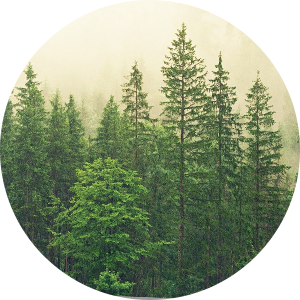
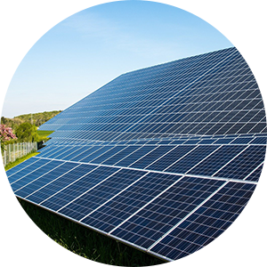
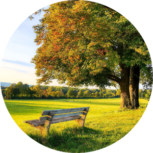

환경경영
환경 경영 시스템(ISO14001)
오창공장은 기업의 사회적 책임을 다하고, 지속가능한 기업과 사회를 만들기 위해
환경경영시스템인 ISO14001을 구축하고 있습니다.
지속적인 오염물질 감축 및 청정생산체제 구축, 자원의 재활용 등을 주요 환경경영 이슈로 삼아 기업활동과 환경의 조화를 끊임없이 추구하고 있으며, 전 부서별 환경경영을 위한 목표수립 및 지속적 개선을 실시하는 한편, 환경경영시스템의 적합성 및 환경목표 달성도 평가를 통해 환경경영활동을 조직 전반에서 수행하고 있습니다.
임직원들은 저탄소사회 구현에 앞장서기 위해 자발적인 온실가스 저감활동을 실천하고 있으며, 사업장에 대한 온실가스 인벤토리를 구축ㆍ공유하여 저감할 수 있는 시스템을 운영함으로써 기후변화 대응 및 녹색성장을 위한 경영활동을 실천하고 있습니다. 또한, 높아지는 국내외 환경규제 리스크와 이해관계자 만족을 위해 노력하고 있습니다.
녹색 기업
사업장의 환경오염물질 저감과 자원 및 에너지 절감을 통한 환경경영체제를
구축하여 2009년 환경부가 지정한 녹색기업으로 인증 받았습니다.
환경오염물질 저감과 자원 및 에너지 절감을 통한 환경경영체제를 구축
스스로 사업장의 환경성을 평가하고 개선계획을 실행하여 자율적인 환경경영체제를 구축
환경오염물질은 법 기준의 20% 이내로 배출농도를 관리
방지 시설에 대한 철저한 관리 및 사전점검을 통해 환경리스크를 최소화
녹색기업 간담회 및 환경 정책토론회 참여
색기업 사랑의 연탄 나눔 봉사활동 등 다양한 기관과 지역사회의 녹색경영활동을 실천
녹색 경영 활동
유한양행은 임직원들이 자발적 온실가스 저감을 실천하고, 지역사회 저탄소 문화 장착을
위한 녹색경영활동을 지속적으로 수행하고 있습니다.
-

- 2050 탄소중립, 1사 1숲 가꾸기
- 금강유역환경청으로부터 제공받은 일정 규모의 매수토지에 나무를 식재하고 지속가능한 숲 가꾸기를 통해 미세먼지 저감 및 탄소중립 실현기반을 마련함.
-

- 미세먼지 고농도 계절 자발적 저감 협약
- 미세먼지 농도가 높을 것으로 예상되는 12월~3월의 미세먼지 농도를 저감하기 위해 협약을 체결하고, 주변지역의 맑은 공기를 되찾기 위해 자발적인 저감노력을 지속적으로 실천함.
-

- 계룡산 국립공원 파크프렌즈 협약
- 국립공원관리공단과 자연 ∙ 문화 자원의 보전 필요성을 공동으로 인식하고, 계룡산 국립공원의 자연환경 보전과 쾌적한 공원 환경 조성을 위한 협약을 체결.